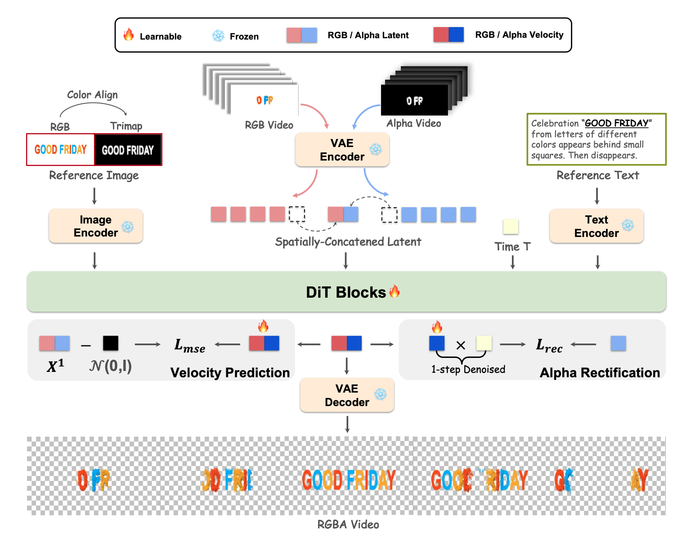

Introduction
We introduce the first method, to the best of our knowledge, for adapting image-to-video models to layer-aware text (glyph) animation, a capability critical for practical dynamic visual design. Existing approaches predominantly handle the transparency-encoding (alpha channel) as an extra latent dimension appended to the RGB space, necessitating the reconstruction of the underlying RGB-centric variational autoencoder (VAE). However, given the scarcity of high-quality transparent glyph data, retraining the VAE is computationally expensive and may erode the robust semantic priors learned from massive RGB corpora, potentially leading to latent pattern mixing. To mitigate these limitations, we propose TransText, a framework based on a novel Alpha-as-RGB paradigm to jointly model appearance and transparency without modifying the pre-trained generative manifold. TransText embeds the alpha channel as an RGB-compatible visual signal through latent spatial concatenation, explicitly ensuring strict cross-modal (RGB-and-Alpha) consistency while preventing feature entanglement. Our experiments demonstrate that TransText significantly outperforms baselines, generating coherent, high-fidelity transparent animations with diverse, fine-grained effects.
Method
🌟 Core Contributions
-
🚀 Novel Framework: Adapts an I2V generalist to generate per-frame transparent glyph layers seamlessly.
-
🎨 Unified RGBA Representation: Introduces the Alpha-as-RGB strategy, explicitly representing the Alpha channel within the RGB space.
-
⚡ Efficient Training: Eliminates the need for separate latent encoders or special token learning, unlike traditional VAE-based methods.
-
🎬 Practical Application: Enables high-quality transparent text animation guided by reference text and images.

Here is the pipeline of our TransText. We obtain input latents by encoding the RGB video and the RGB-projected Alpha video (Alpha-as-RGB) via the VAE. These latents are spatially concatenated for alignment. Additionally, the reference image and its derived trimap serve as structural conditions to guide the joint generation of both RGB textures and $\alpha$ mattes. During training, in addition to the standard velocity prediction loss $\mathcal{L}_{\mathrm{mse}}$, we introduce an $\alpha$-oriented reconstruction term $\mathcal{L}_{\mathrm{rec}}$. Reconstruction loss performs one-step denoising using the predicted velocity to reconstruct the clean latent state, and explicitly aligns the reconstructed $\alpha$ with the ground-truth matte, thereby significantly improving fine-grained transparency generation.
Auto Slideshow Display
Alternatively, the Auto Slideshow Display feature enables readers to enjoy a large array of visual elements through an automated, slideshow-like presentation. Users can also navigate through the slideshow manually with "Left" and "Right" buttons. Below is an example using videos generated in MarDini.
Visualized Results
Here are some visualized results of our TransText, which supports various fine-grained transparency effects. The reference image is ignored for simplifying the presentation.